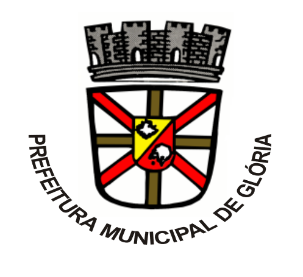

Clientes

Excelência em perfuração e locação de poços artesianos.
Na Sete Poços Artesianos, somos apaixonados por fornecer soluções inovadoras e sustentáveis para o abastecimento de água. Atuando em toda a região nordeste, nos especializamos na perfuração, locação e manutenção de poços artesianos, além de oferecer suporte completo na obtenção de licenças e outorgas necessárias. Nossa missão é garantir acesso confiável e eficiente à água, contribuindo para o desenvolvimento sustentável de comunidades e negócios. Com uma equipe altamente qualificada e tecnologia de ponta, nos dedicamos a oferecer serviços de excelência, atendendo às necessidades específicas de cada cliente. Escolha a Sete Poços Artesianos e descubra como podemos transformar o seu acesso à água com qualidade e profissionalismo.
Facilitamos a obtenção de todas as licenças e outorgas necessárias para a perfuração de poços, garantindo conformidade legal e tranquilidade para o seu projeto.
Oferecemos soluções de locação de poços artesianos, adaptadas às suas necessidades específicas, proporcionando acesso contínuo e confiável à água.
Realizamos perfurações de poços artesianos utilizando tecnologia avançada e uma equipe altamente qualificada, assegurando eficiência e durabilidade.
Proporcionamos um serviço completo de instalação de poços artesianos, desde a perfuração até a operação, garantindo a máxima performance do sistema.
Telefone: (77) 9 9823-0917
Email: contato@setepocos.com.br